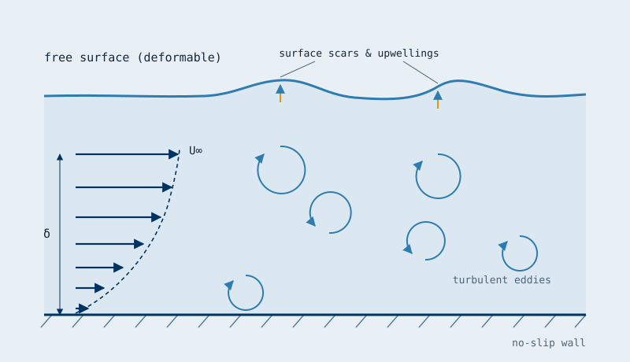
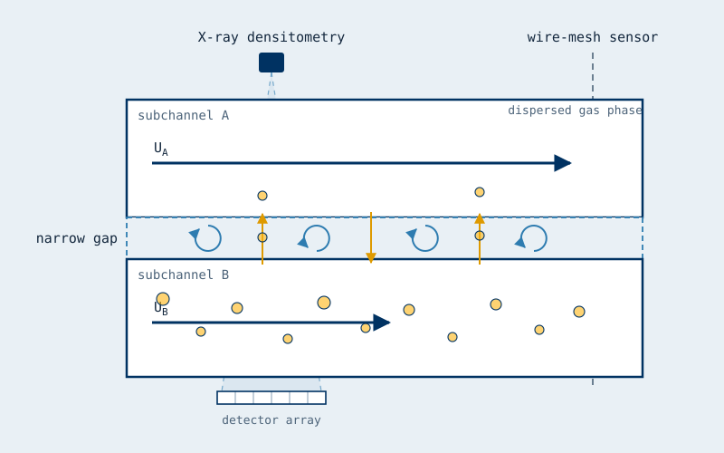
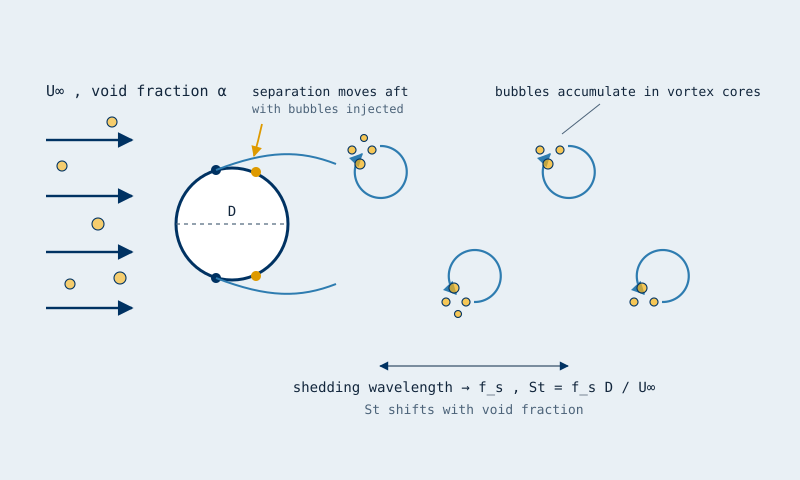
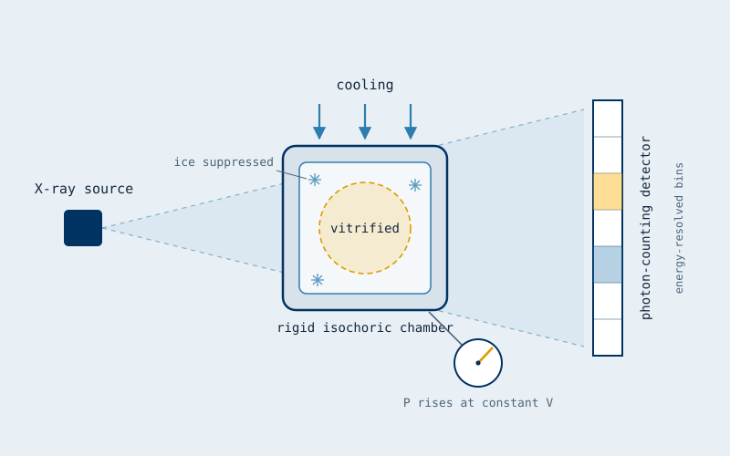
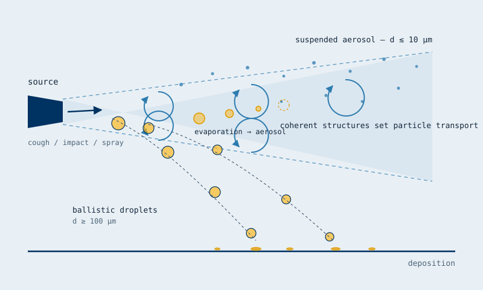
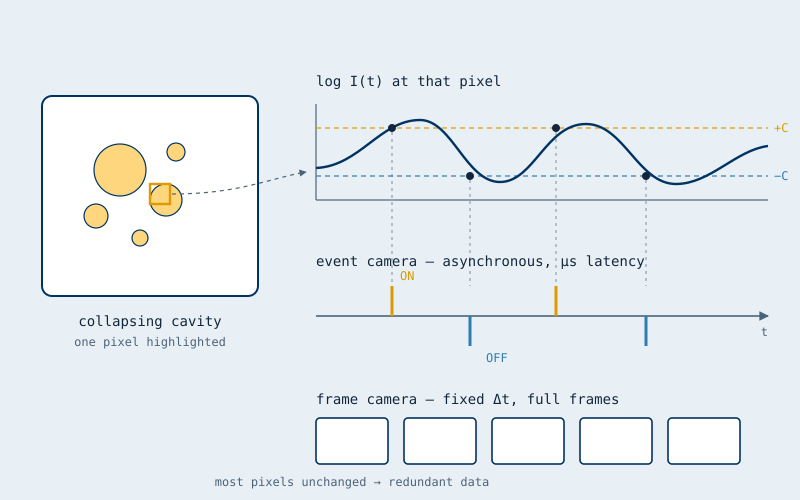

What we study
Research Areas
Multiphase flows for energy production, transportation, industrial, biological, and environmental applications — the overarching, unifying theme of our research.
The goal of our research is to advance the physical understanding of high-Reynolds-number single- and multiphase flows, primarily through experiments and through the development and use of advanced measurement techniques. Multiphase flows appear in almost every aspect of modern life: offshore applications, biological flows, energy production, chemical processing, and naval hydrodynamics.
Specific topics include reducing the drag of marine vehicles, mitigating damage and noise caused by cavitation in naval and industrial applications, and efficient handling of flow in energy production. For details, see Publications and our YouTube channel.
Theme
Decarbonizing marine transport
Shipping moves ~80% of world trade and burns fuel mostly to overcome friction. We study the multiphase physics that could cut that bill.

Gas jets injected into a boundary layer beneath a surface and subject to liquid cross-flow. See Mäkiharju et al., J. Fluid Mech. 818 (2017).
Key papers
Multiphase flows for frictional drag reduction
Frictional drag accounts for roughly 60% of a typical cargo ship's propulsive power. Air-layer drag reduction could cut a ship's frictional resistance significantly — with major economic and environmental impact. We study how air layers form and persist, including gas injection from discrete ports rather than continuous slots.

CT scan of gas trapped on a superhydrophobic surface. Left: axial cut (dark spots are plastrons). Right: gas interfaces seen through the wall, showing coverage.
Key papers
Physics of superhydrophobic-surface drag reduction
Superhydrophobic surfaces (SHS) may reduce frictional drag on ships and in pipelines. Teaming with leading materials groups who develop the surfaces, we investigate the physical mechanisms of SHS drag reduction — and the limits of the technique.

Schematic: wall turbulence meeting a deformable free surface. The largest eddies reach the interface, leaving scars and upwellings that in turn feed back on the boundary layer.
Key papers
Turbulent boundary layers meeting a free surface
Air lubrication ultimately succeeds or fails at an interface. We measure how a turbulent boundary layer and a free surface exchange momentum and vorticity — how eddies deform the surface, and how that deformation feeds back on the near-wall turbulence. This is the canonical problem sitting underneath the applied air-layer work.
Theme
Multiphase flows in energy & industrial systems
Bubbles, cavities and phase change govern heat transfer, loading and noise in reactors, pumps, valves and propulsors.

Schematic: two parallel subchannels connected by a narrow gap. Coherent structures in the gap drive cross-channel exchange; we resolve them with wire-mesh sensors and X-ray densitometry. See Int. J. Multiphase Flow (2023).
Key papers
Multiphase mixing through narrow gaps
Mixing between adjacent flow channels connected by a narrow gap governs heat and mass transfer in the rod-bundle geometries central to nuclear thermal-hydraulics. We measure single- and two-phase mixing for both balanced and unbalanced channel flows, resolving the coherent structures within the gap and producing data intended for code validation.

Schematic: bubbles injected into cross-flow over a cylinder collect in the low-pressure vortex cores, shift the shedding frequency, and move the separation point aft. See Int. J. Multiphase Flow (2026).
Key papers
Bubble–vortex interaction and flow–structure coupling
Adding bubbles to a separated flow changes it qualitatively, not just quantitatively. In cross-flow over a cylinder we find that bubbles accumulate in vortex cores, shift the shedding frequency, and can trigger transition to the supercritical regime far below the single-phase Reynolds number — with direct consequences for drag, loading and noise.
Cavitation of a Newtonian fluid in a sudden gap expansion. (Silent video.)
Key papers
Cavitation for industrial, transportation & medical applications
When local pressure drops below vapor pressure, a liquid can vaporize — cavitation. It appears in valves, on ship propellers, and even in the human body, and the inception pressure depends on the liquid's nuclei content and on nuclei at adjacent surfaces. We study cavitation in both Newtonian and non-Newtonian fluids.
Theme
Phase change & transport for health and environment
The same nucleation and transport physics decides whether an organ survives freezing and where an airborne droplet lands.

Schematic: photon-counting, multi-energy X-ray CT of a rigid constant-volume chamber. Holding volume fixed raises pressure during cooling and suppresses ice. See Cryobiology (2024) — Arthur W. Rowe Best Paper Honorable Mention, Society for Cryobiology.
Key papers
Phase change, vitrification and cryobiology
Vitrifying a biological sample without forming ice is fundamentally a nucleation and heat-transfer problem. With the Rubinsky group we use photon-counting, multi-energy X-ray computed tomography to observe isochoric (constant-volume) vitrification directly — resolving the ice- and cavity-free end state that isobaric cooling cannot reach.

Schematic: in a particle-laden turbulent jet, large droplets fall ballistically while small ones evaporate into aerosol carried by coherent structures. See Aerosol Sci. Technol. (2021).
Key papers
Droplet and aerosol transport
Where a droplet ends up depends on its size and on the coherent structures carrying it. We study particle-laden turbulent jets — from coughs to laboratory spills — measuring how large droplets fall ballistically while smaller ones evaporate into aerosol that follows the flow, and how that partition sets deposition and exposure.
Theme
Measurement science: seeing the inaccessible
Many flows that matter are opaque, fast, or sealed inside metal. We build the instruments that make them measurable — and those instruments now travel far beyond fluids.

X-ray void-fraction fields in a shedding cavity at initial collapse and at the start of a new cycle. 1 ms exposure; 4% void-fraction and 0.5 mm spatial resolution. Void fractions span 0% in the free stream to nearly 100% in the sheet cavity. Flow right to left.
Key papers
Advanced X-ray & optical flow diagnostics
Many of the most important multiphase flows are optically opaque. We develop and use time-resolved X-ray densitometry, multi-spectral computed tomography, X-ray particle velocimetry and tracking (XPV/XPTV), and tomographic PIV to measure what conventional optics cannot see.

Schematic: an event camera reports per-pixel brightness changes asynchronously with microsecond latency, rather than full frames at a fixed rate. See Meas. Sci. Technol. (2026).
Key paper
Event-based (neuromorphic) cameras
Event cameras report only what changes, pixel by pixel, with microsecond latency — a natural match for sparse, fast phenomena such as cavitation inception, bubble passage and vortex shedding. We characterise when their frequency estimates can be trusted, and build triggering and detection systems around them.
Watch